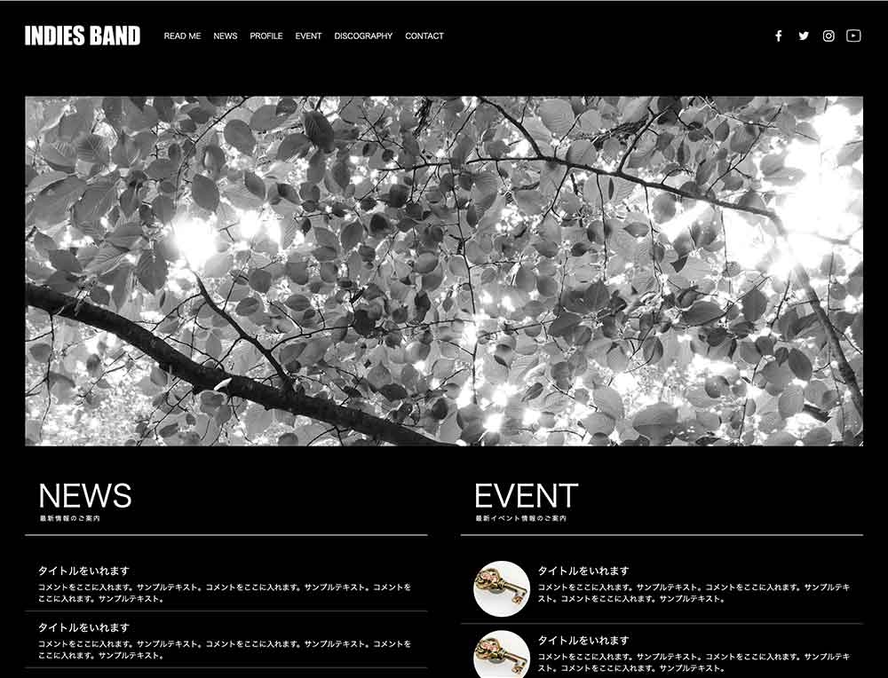

READ MEテンプレートのご利用前に必ずお読み下さい
利用規約のご案内
このテンプレートは、Template Partyにて無料配布している『インディーズバンド・アーティスト向け 無料ホームページテンプレート tp_band1』です。必ずダウンロード先のサイトの利用規約をご一読の上でご利用下さい。
■HP最下部の著作表示『Web Design:Template-Party』は無断で削除しないで下さい。
わざと見えなく加工する事も禁止です。
■下部の著作を外したい場合は
Template-Partyのライセンス契約を行う事でHP下部の著作を外す事ができます。
テンプレートに梱包されているjavascriptファイル（jsファイル）について
当テンプレートに梱包されているjavascriptファイルは全て有限会社クリタス様提供のものです。jsファイルは改変せずにご利用下さい。
また、当サイトのテンプレート「以外」に使いたいなど、「プログラムのみ」を使う場合はこちらの規約をお守り下さい。
ABOUT当テンプレートについて
当テンプレートはレスポンシブWEBデザインです
パソコン、スマホ、タブレットなど、各端末サイズでレイアウトが自動で切り替わります。
古いブラウザで閲覧した場合にCSSの一部が適用されない（角を丸くする加工やグラデーションなどの加工等）のでご注意下さい。
各デバイスごとのレイアウトチェックは
最終的なチェックは実際のタブレットやスマホで行うのがおすすめですが、臨時チェックは最新のブラウザで行う事もできます。ブラウザの幅を狭くしていくと、各端末サイズに合わせたレイアウトになります。
注意：cssはリアルタイムで反映されますが、javascript(js)はブラウザを再読み込みさせないと反映されないので、レイアウトが切り替わったらブラウザを再読み込みさせて下さい。javascriptは小さい端末用の開閉ブロックなどに使われています。
各デバイス用のスタイル変更は
cssフォルダの各cssファイルで行って下さい。詳しい説明も入っています。
メインのスタイルはstyle.cssになります。
前半はパソコン環境を含めた全端末の共通設定になります。中盤以降、各端末向けのスタイルが追加設定されています。
media=" (～)"の「～」部分でcssを切り替えるディスプレイのサイズを設定しています。ここは必要に応じて変更も可能です。
小さい端末（※幅900px以下）の環境でのみ
メインメニューが折りたたみ式（３本バーアイコン化）になります。バーのスタイル設定もstyle.cssで行う事ができます。
画像ベースは
「base」フォルダに入っていますのでご自由にご活用下さい。
写真の元素材を当社運営のPHOTO-CHIPSやDECORUTOで配布している場合もございます。
HOW TO当テンプレートの使い方
トップページを２種類用意しています
index.htmlと、以下のシンプル版のindex2.htmlです。
index2.htmlをトップページにしたい場合は、ファイル名をindex.htmlに上書きして下さい。

初心者向けマニュアル公開中
画像加工やテンプレートの編集方法、無料サーバーを使ってサイトを公開するなど動画をまじえてわかりやすく解説しています。
初心者向けマニュアルはこちら。
注意：当テンプレートにはメインメニューが「２箇所」入っています
パソコンなどの大きな端末「menubar（幅901px以上）」向けと、タブレットやスマホなどの小さな端末「menubar-s（幅900px以下）」向けがそれぞれ入っています。大きな端末向けは編集ソフトで見れると思いますが、小さな端末向けは見えないと思いますのでhtml側で編集して下さい。
titleタグ、copyright、metaタグ、他の設定
titleタグの設定はとても重要です。念入りにワードを選んで適切に入力しましょう。
まず、htmlソースが見れる状態にして、
<title>インディーズバンド・アーティスト向け 無料ホームページテンプレート tp_band1</title>
を編集しましょう。
あなたのホームページ名が「INDIES BAND」だとすれば、
<title>INDIES BAND</title>
とすればＯＫです。SEO対策もするなら冒頭に重要なワードを入れておきましょう。
copyrightを変更しましょう。
続いてhtmlの下の方にある、
Copyright© INDIES BAND All Rights Reserved.
の部分もあなたのサイト名に変更します。
metaタグを変更しましょう。
htmlソースが見える状態にしてmetaタグを変更しましょう。
ソースの上の方に、
content="ここにサイト説明を入れます"
という部分がありますので、テキストをサイトの説明文に入れ替えます。検索結果の文面に使われる場合もありますので、見た人が来訪したくなるような説明文を簡潔に書きましょう。
続いて、その下の行の
content="キーワード１,キーワード２,～～～"
も設定します。ここはサイトに関係のあるキーワードを入れる箇所です。10個前後ぐらいあれば充分です。キーワード間はカンマ「,」で区切ります。
h1ロゴのaltタグも変更しましょう。
html側に、
alt="INDIES BAND"
となっている箇所があるので、この部分もあなたのサイト名に変更しましょう。
上部のロゴ画像について
文字なしの土台画像がbaseフォルダに入っていますのでそれにサイト名をのせてimagesフォルダに上書きして下さい。画像の大きさは自由に変更してもらっても構いませんがある程度大きくしておいた方が高解像度の端末で鮮明に見えます。
トップページオープニングのロゴマークのアニメーションについて
※「vivus.js」のダウンロードが必要です。
ダウンロード直後のままではロゴのSVGアニメーションは動きません。必ずマニュアルをご覧下さい。設定は簡単です。
※アニメーションはIE8以下は表示されません。また、スライドショーがIE10以上でしか動作しないので、代わりに固定画像を表示させている分、ロゴアニメーションもこれに隠れます。つまり、ロゴアニメーションもスライドショーと同じIE10以上で見れるという事になります。
速度の調整をしたい場合
index.htmlのhtml側の下にある、
duration: 150, //アニメーションの速度
の150を変更してみて下さい。
オリジナルの作品に置き換えたい場合。アウトライン化できるならイラストなどもOKです。
Illustratorを持っている人であればアウトライン化してSVG出力する事でアニメーションを置き換える事もできます。
Illustratorで自作したい方はこちらのマニュアルをご覧下さい。
Illustratorを持っていなくてもSVG化してくれるサイトがあるようなので、そちらで変換したものをテキストエディタなどで開いてコードを抜き出す方法もあります。
又は、完成したアニメーション画像を配布しているサイトもあるようなので、簡単に入れ替えたい人は利用されるといいと思います。
SVGタグ出力までの代行をしています。
SVGタグ出力までの作業代行を承っております。費用は2,000円〜5,000円ほど。※ロゴデザインは含まず。
ロゴは手描きでも構いませんがコントラストがしっかりしていないとアウトライン化できません。繊細な絵は不可。
まずはお問い合わせ下さい。
トップページのスライドショーについて
css3に対応した環境(IEなら10以上)でしか動作しません。
古いブラウザでは固定画像になります。
古いブラウザ向けの固定画像の指定は、index.htmlのhead内の、
.slide1,.slide2,.slide3 {background: url(images/1.jpg) no-repeat center center;}
部分です。
この「images/1.jpg」が表示されます。古いブラウザ専用に別の画像を用意する場合は、ここの画像ファイル名を変更して下さい。
画像を入れ替えたい場合
「1.jpg」、「2.jpg」、「3.jpg」の3枚のjpg画像を用意してimagesフォルダに上書きして下さい。
拡張子が「jpeg」や「JPG」と少し違った場合にうまく表示できない可能性があるので「jpg」で統一して下さい。画像を「jpg」にできない場合はcssフォルダのslide.cssの拡張子指定を変更しても構いません。
画像の容量はできるだけしぼって下さい。重いと動きがガタつきます。
画像サイズについては、cssの背景画像（cover）なので適当で構いません。ただ、縦端末、横端末で画像がトリミングされますので、切れてもおかしくない画像を用意して下さい。
１枚ごとにリンク設定ができます。
３枚とも、news.htmlへのリンク設定が入っています。必要に応じて調整して下さい。
リンクを使わない場合は、リンクタグを削除して下さい。
固定画像にしたい場合
cssフォルダ内にあるslide.cssの
/*CSSスライドショーアニメーション設定
のブロックを全て削除。
あとはhtml側から残したい画像の行以外を削除。
スライドショーから固定画像にすると、当然ロゴアニメーションも隠れて出なくなります。
その間、headerブロックの待機時間が長く感じると思いますので、cssフォルダのstyle.cssの、
.home header {
ブロックにある、
animation-delay: 5s; /*アニメーションを遅れて開始させる。「s」は秒の事。*/
の5sを1sなどに変更して下さい。
速度や枚数などの調整
cssフォルダのslide.cssで行って下さい。解説も入っています。
スライドショーに関する詳しい使い方はこちら。
リストタグを使いたい場合の注意点
そのままではリストマークが出ませんので、リストタグを使う場合は以下のようなスタイルを追加して下さい。
<ul class="disc">
<li>リストタグ</li>
<li>リストタグ</li>
<li>リストタグ</li>
</ul>
↓出力例
- リストタグ
- リストタグ
- リストタグ
- olタグはそのままででます。
- olタグはそのままででます。
- olタグはそのままででます。
- olタグはそのままででます。
上部の横並びメニュー
現状から増やすと、ウィンドウ幅を狭くしていく段階で右側のアイコンブロックと重なるので注意して下さい。
現在ページ表示中のメニューについて
当ページでいえば上部メインメニューの「READ ME」に色がついていますが、その設定の説明です。
通常は、
<li><a href="">メニュー名</a></li>
のようになっていますがこれを、
<li class="current">・・・
とする事で色がつきます。自動で色がつくわけではないのでご注意下さい。
スクロール中に出る「↑」アイコンについて
fixmenu_pagetop.jsで動作の制御を、cssフォルダのstyle.css内の
/*PAGE TOP（↑）設定
でボタンデザインを設定しています。
ボタンの出現ポイントは、現在350pxの場所になっています。変更したい場合はfixmenu_pagetop.jsの34行目あたりにある、
offsettop = 350;
の350を変更して下さい。